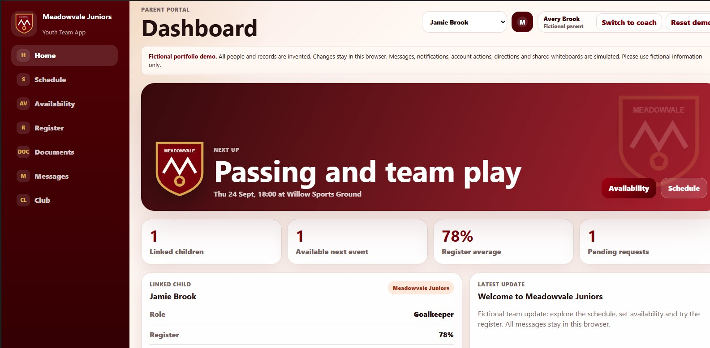

COACH PORTAL
Plan, select and record
Manage fictional players, fixtures and training. Record attendance, review availability, assemble squads, use the tactical whiteboard, and update development and match records.
DIGITAL PRODUCT / PUBLIC INTERACTIVE DEMONSTRATION
A youth football club management app shaped by the day-to-day needs of coaches and parents.
This public edition uses a fictional club and 14 invented players. It preserves the design and interactive workflows of a real-world project while keeping the original club's records and services private.

01 / THE BRIEF
Volunteering as a youth football coach exposed me to the everyday coordination that happens around training and matches: gathering availability, recording attendance, organising squads and keeping parents informed. I developed an app to bring those tasks into one mobile-focused experience, with different views for coaches and parents.
The original application is used in a real club context and is private. Meadowvale Juniors is a separate portfolio demonstration: it retains the interface and workflows but substitutes fully invented records and browser-local interactions.
02 / THE PRODUCT
COACH PORTAL
Manage fictional players, fixtures and training. Record attendance, review availability, assemble squads, use the tactical whiteboard, and update development and match records.
PARENT PORTAL
See a linked fictional player's schedule, respond to availability requests, read announcements, check attendance and access sample documents.
INTERACTION DESIGN
Keep recurring tasks close to hand while giving coaches and parents distinct navigation and relevant information for their roles.
PORTFOLIO ACCESS
Switch between fictional coach and parent experiences, make local changes and reset the data. No registration or access to the private club environment is required.
03 / DEVELOPMENT & ITERATION
My involvement with youth football informed the app's requirements and its separate coach and parent experiences. I directed the product's design and development, reviewed the workflows in use, and iterated on practical issues in areas such as navigation, player management, squad selection and documents.
The app was developed with AI assistance, including OpenAI Codex. My role includes identifying the user problems, setting requirements, guiding implementation, evaluating the results and deciding what needs to change. I describe the work this way rather than claiming that every line of code was independently hand-written.
For the public edition, I kept the real app private and directed the creation of a separate fictional version. The demonstration uses new sample records and local storage instead of the production backend, allowing visitors to explore the design without viewing real children's information.
TRY IT YOURSELF
Switch roles, open the schedule, adjust fictional availability and try the team-management workflows in your browser. Use Reset demo to return to the original sample data.
This is a portfolio demonstration, not a live multi-user service. Messages, notifications, account actions and shared whiteboards are simulated; changes are saved locally in your browser. Please enter fictional information only.